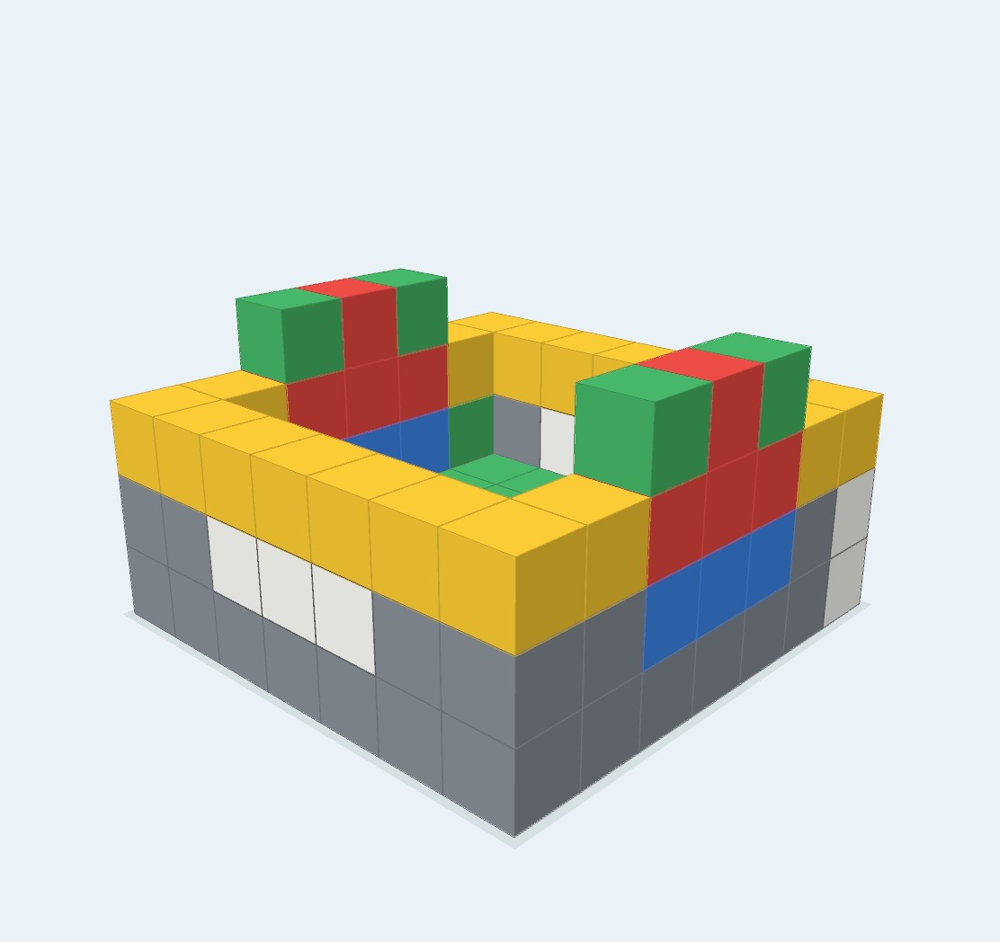

紙で考え、立体を動かして確かめる
みえつみは、マスごとに高さを指定して立方体の積み木を組み立て、自由な回転や決まった方向からの視点で確かめられる3D積み木アプリです。
小学校受験の積み木問題では、斜めから見た図をもとに、隠れた積み木を含む総数や、前後左右・上から見た形を考えることがあります。紙の問題や実物の積み木で考えたあと、画面上で立体を動かし、考え方を確かめるために利用できます。
みえつみは、実物の積み木や自分で考える時間に置き換わるものではありません。立体の見え方を確認するための補助ツールとしてお使いください。
斜めからは見えない1個を探す
次の模型には積み木が5個あります。最初の斜め表示では4個しか見えませんが、上の積み木の下に青い積み木が1個隠れています。
視点を「うしろ」へ切り替えると青い積み木が見えます。「せん」では、元の斜め方向からでも輪郭を通して位置を確かめられます。


積み木問題での使いどころ
隠れた積み木を見つける
立体を自由に回したり、「すける」「せん」へ切り替えたりして、手前の積み木に隠れた部分を確かめます。
見る方向を切り替える
自由に回転できるほか、「しょうめん」「ひだり」「みぎ」「うしろ」「まうえ」のプリセットで、問題に指定された方向を再現できます。
色を手掛かりにする
隠れた積み木や注目する積み木に色を付けると、保護者が位置関係を説明するときや、色付きの見え方を考えるときの目印になります。
アンテナで数える
各列の上に、その列の高さと同じ本数の線を表示します。列ごとの本数を数え、全体の個数を考える方法に使えます。
光と影を比べる
フル版では光源を動かし、光の反対側へ影が伸びる様子を比べられます。光と影の問題を確かめるための補助機能です。
積み木を崩さず、自由に作る
画面の中なら、積み木がずれたり崩れたりすることなく、実物では用意しにくい数の積み木も使えます。色を塗り分けながら、建物や模様などを自由に作って遊ぶこともできます。
フル版では5×5×5と7×7×7の大きさ、追加色、作品の写真保存を利用できます。

サポート情報
基本的な使い方
形の作り方、動かし方、色や表示の使い分け、作品保存を説明します。
使い方を見る →積み木問題での使い方
隠れた積み木、個数、見る方向、アンテナ、光と影の確かめ方を説明します。
学習での使い方を見る →無料版とフル版
無料で使える学習向けの基本機能と、フル版で広がる創作機能を案内します。
プランを見る →プライバシーポリシー
積み木データ、写真、アプリ内課金、お問い合わせ情報の取り扱いを説明します。
プライバシーポリシーを見る →よくある質問
みえつみは問題集や正解判定のアプリですか？
いいえ。問題集や自動採点はありません。紙の問題と同じ形を作り、立体を動かして考え方を確かめるためのツールです。
実物の積み木の代わりになりますか？
実物を手で積み、見る場所を変えて考える体験も大切です。みえつみは、自由回転や「すける」「せん」など、画面だからできる確認を補う目的でお使いください。
「すける」と「せん」は何が違いますか？
「すける」は積み木の面を半透明にし、「せん」は輪郭を中心に表示します。どちらも隠れた積み木や重なりを確認できます。
アンテナとは何ですか？
縦の列ごとに個数を数えるための補助表示です。各列の一番上に、その列の高さと同じ本数の線を表示します。
無料版では何ができますか？
3×3×3、基本色、自由回転、視点プリセット、「つうじょう」「すける」「せん」、個数表示、アンテナを利用できます。詳しくは無料版とフル版をご覧ください。
インターネット接続は必要ですか？
積み木を作ったり動かしたりする基本機能には、原則として必要ありません。購入、購入の復元、サポートページの表示には通信が必要になる場合があります。
保存した写真はどこに入りますか？
フル版で「しゃしん」を押すと、端末の写真ライブラリへ保存されます。画像が開発者へ送信されることはありません。
利用データを収集しますか？
広告、行動分析、ユーザーアカウント、位置情報の収集を行いません。詳しくはプライバシーポリシーをご覧ください。
対応する端末は何ですか？
iOS 15以降のiPhoneおよびiPadに対応しています。画面は端末の優先言語に合わせて日本語または英語で表示されます。
お問い合わせ
不具合、購入、使い方についてのお問い合わせは、次のメールアドレスへお願いします。
不具合については、可能な範囲で次の情報をお知らせください。
- 利用している端末
- iOSまたはiPadOSのバージョン
- みえつみのバージョン
- 問題が起きるまでの操作
- 画面のスクリーンショット
個人情報や、第三者が写った画像は送らないでください。